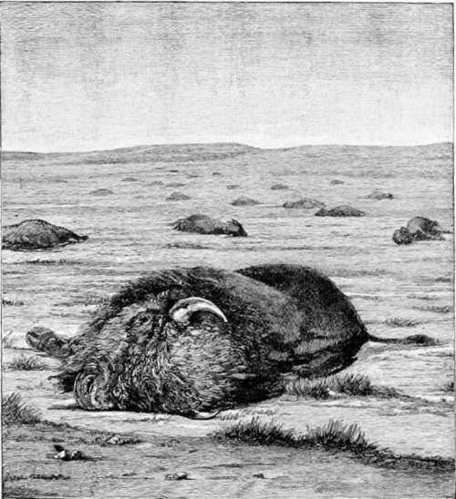

Camping And Hunting In The Shoshone. Part 7
Description
This section is from the book "Hunting", by Archibald Rogers. Also available from Amazon: Hunting.
Camping And Hunting In The Shoshone. Part 7
Not much sport in that, so it seems to me now. And yet, after longing and longing even to see a big bear, and never seeing him; after finding, sometimes, the ground near our camp all torn up overnight, as we used in 1868; after having had three bears cross the river I was fishing in, on Sunday morning (oh! charitable reader, a quiet little stroll by a silver, purling, singing mountain stream, such as was Shell Creek, could not offend even the shade of Izaak Walton, though it were taken on Sunday) —yes, I went down that stream not more than three miles, and in the two or three hours I spent in filling my pockets with the trout, no less than three bears, good-sized bears, too, by their tracks, crossed that stream behind me and between me and camp — after such a long time of probation, it was more than exciting to see, here then, at last, the real thing, an unmistakable grizzly. There actually was such a thing as a grizzly in the flesh! We had begun to doubt it; not so big as a buffalo, truly, now I came to see him in daylight, but weighing, I should say, fully six hundred pounds.
The Slaughter of Buffalo. (From Photograph.)
As to bears' weights, I confess myself sceptical about the existence of a bear in the Rocky Mountains, this side of California (I cannot say anything about California grizzlies), weighing over one thousand pounds. Colonel Pigot, the most noted bear-hunter in the West, who has claimed royalty, I understand, on seventy grizzlies, thinks he never killed any over that weight. I understand, from one of the men who accompanied Colonel Pigot, that he carries a steelyard that weighs up to three hundred and fifty pounds, and by this means has obtained an idea, and a fairly accurate one, of the weight of some of his largest trophies. My prize animal, killed last year, measured nine feet three inches from his nose to his heels, and certainly, though in good condition, did not go over nine hundred pounds. My hunter thinks he has never seen one weighing more than a thousand; and he has killed as many bears as most men — outside of story-books.
The largest bear any of us ever saw was a cinnamon that came within an inch of killing one of my men, a good hunter and first-class guide—Charles Huff. (I may refer to the big cinnamon, too, as an instance of the danger that sometimes attends trapping the bear.) He had set his traps near Sunlight, in the spring, and was unable to visit them for a week. When he got to the bait, trap and log were gone. After taking up the trail, he soon found the remnants of his log chewed to matchwood; the bear, evidently a large one, had gone off" with the trap. He followed his trail as long as he had light, but found nothing, and had to return to camp. Next day, very foolishly, he took the trail again alone, beginning where he had left off. After a long march he came to the steep side of a hill; the bear had evidently gone up there; on the soft, snow-sodden ground the trail was plain. Just as he was beginning to ascend, there was a rush and a roar, and the bear was on him. He had no time to put his repeater to his shoulder, but letting it fall between his hands, pulled the trigger. The bear was within a few feet of him, and by a great chance the un-aimed bullet took him between the eyes. He had evidently tried the hillside, and, worried by the heavy trap, had come back on his trail and lain behind a great heap of dirt, into which he had partly burrowed, waiting for his enemy. Among the debris of spring-tide — fallen stones and uprooted trees —a bear could easily lie hidden, if he was mad, and wanted to conceal himself till the enemy was within a few feet. It was a terribly close shave.
All animals are at times strangely hard to kill; this, I fancy, is especially true of the grizzly. Again and again he will drop to a well-planted shot, as will any animal; nothing that runs can stand up long after it has received a quartering shot —i.e., when the bullet is planted rather well back in the ribs, about half way up, and ranges forward to the opposite shoulder. Such a shot, especially if the bullet is a fifty-calibre, will drop anything; but the point of the heart may be pierced, or even the lungs cut, and bears will often fight.
We stalked two grizzlies in the "open" one evening. They were busy turning over stones, in order to get the grubs and worms underneath, and when we managed to get, unseen, within forty yards, at first fire each received a bullet broadside behind the shoulder; but, seemingly none the worse, they both turned down-hill, as bears will when wounded, nine times out of ten, and made for the ravine, whence they had evidently come. This gave me a nice open shot as they passed, and No. 1 rolled over dead; not so No. 2. Before he got a hundred yards away I hit him three times. My rifle was a fifty-calibre Bullard repeater, the one I have used for years — one hundred grains of powder and a solid ball. At the fourth shot he fell all of a heap, seemingly dead. To save trouble we laid hold of the first one, which lay about seventy yards above the second, and dragged him down the steep incline to where this second lay, for convenience in skinning. We got within a few feet of the bear, when up he jumped, and, on one hind leg and one fore, went for Frank. The attack was tremendously unexpected and sudden. At a glance you could see that the poor, plucky brute was past hurting anyone; for one arm was smashed, and his lower jaw was shot almost completely away. Yet I tell the simple truth when I say that for a few strides he actually caught up to Frank, who made most admirable time; then he suddenly fell dead. We examined that bear carefully; he was a small one, not weighing more than two hundred pounds, and was shot all to pieces. Each of the five bullets I had fired had struck him; one hip and one forearm were broken, the lower jaw shot away; there was one shot in the neck, and one, through and through, behind the shoulder. It is never safe to fool with a grizzly; he may run away as fast as an elk, or he may not. He may drop to the first well-planted bullet, or he may stand up till blown almost to pieces.
Continue to:
- prev: Camping And Hunting In The Shoshone. Part 6
- Table of Contents
- next: Camping And Hunting In The Shoshone. Part 8